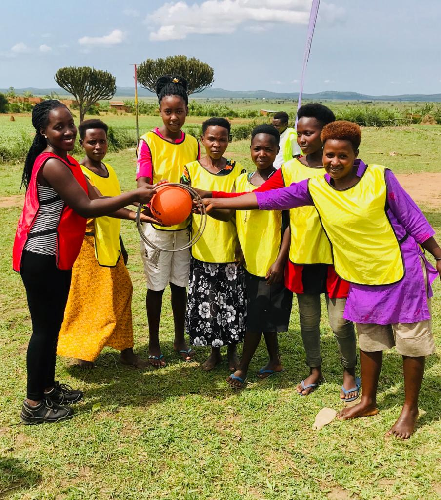
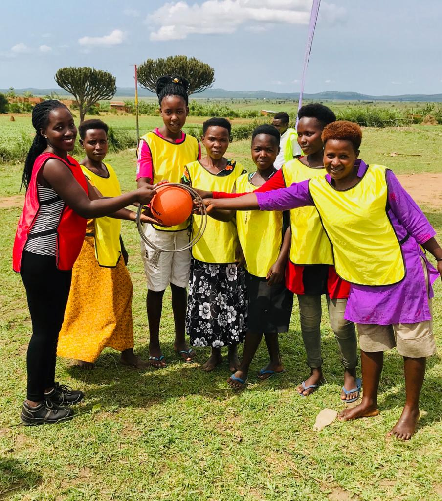

Our approach is the desire to understand and resolve issues with a strong personal
commitment for a sustainable and positive change.
The CSF Foundation’s purpose is to use the power of sport and in particular football, to contribute towards and to enhance the prospects of underprivileged and vulnerable young people by creating sustainable opportunities and by building flourishing lives and communities through a diversity of initiatives, projects and programmes aimed at improving health, encouraging learning, boosting equality and tackling poverty and pursue similar purposes, in particular by distributing its assets and income or by granting other financial benefits to specific or specifiable natural persons or legal entities, institutions and any other type of entity with legal personality to fulfil its purpose. Our Purpose OUR VISION THE “WHY” BEHIND OUR ACTIVITIES Young people, empowered through sport, leading improved lives and fulfilling their potential.
Using the power of sport to contribute towards and to enhance
the prospects of underprivileged and vulnerable young people
by creating sustainable opportunities and by building flourishing lives and communities.
On 8th May 2015 The SOL Foundation was established,
on 12th May 2015 it was registered with
the Commercial Registry in the Principality of NGOs in Uganda as
a charitable foundation with a clear purpose:
Sport
Building a solid foundation with sport

 
